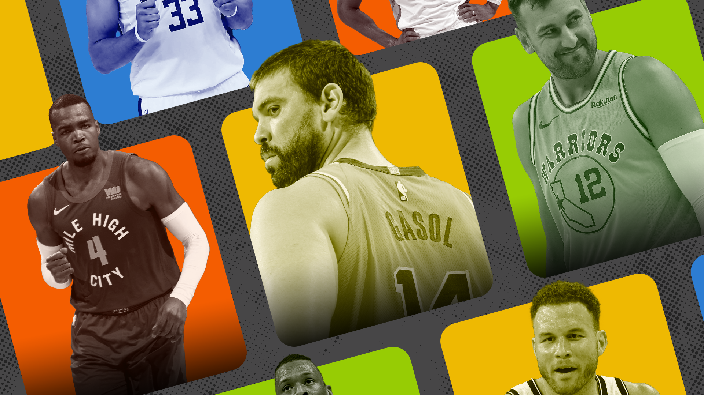

The best decision is no decision this free agency
Some free agents are opting out of the traditional process and looking to sign with teams mid-season. Is this a trend or a passing fad?
Sean Carroll illustration
P aul Millsap now plays for the Brooklyn Nets after signing long after free agency opened this offseason. The Nets were finalists for Millsap alongside the Golden State Warriors, Phoenix Suns and more.
This is pretty run-of-the-mill stuff for a free agent of Millsap’s calibre. He clearly still has talent to make a difference in the NBA, but he’s definitely a fifth starter or situational role player, just as he was this past season with the Denver Nuggets.
When still deciding where to go, one veteran front office executive told Jake Fischer, Bleacher Report that Millsap should wait until the middle of the season: “What's the rush? The money wouldn't get much better, and he can just pick his team.
“What if New Orleans is really good come January? What happens when some guy gets hurt, and that team starts scrambling for a replacement? He can pick his spot.”
We’ve gradually become desensitised to this quote with the amount of player movement in recent years, but isn’t that wild? One front office executive believes a solid player in today’s NBA should not sign with a team, that would be the best decision to make, to be unemployed.
Millsap has made plenty of money in his career after long, successful stints in Utah, Atlanta and Denver, but is he an extremely rare case or is the forward a harbinger for a change in the way we go about free agency?
-
The NBA’s free agency period is pretty self-explanatory. Contracts expire on a certain date (a date that has been changing since COVID-19 disrupted the timeline), players can officially start talking to other teams and then they make a decision on where they’ll play next.
Sometimes players sign the second free agency opens, arguably a bit too soon for some. Other times, a player holds off for a few days and assesses their options before deciding where they’ll live for the next stint of their lives.
Usually, all parties wait and see what the bigger names are going to do before making their own decisions (sometimes referred to with a felicitous domino analogy). Most players want to play with the best and have a shot at contending for a title, so David West, for example, waited until Kevin Durant had signed with the Golden State Warriors before joining.
J.J. Redick liked what he saw in a young New Orleans Pelicans team and thought the team could use his elite shooting and went to Louisiana.
Recently, there has been a trend of role players holding out on the traditional free agency process, waiting until the very last minute to decide where they’ll play. This trend will get major headlines this season, but it actually started a couple of years ago, we just didn’t know it yet.
Andre Iguodala releases The Sixth Man, doesn’t play as the sixth man
When Kevin Durant signed with the Nets, the Warriors knew they weren’t going to be very good. Not only did they lose KD, but Klay Thompson was likely missing an entire season due to a torn ACL he suffered in the NBA Finals.
The Warriors’ owners decided the 2019-20 season would be the perfect way to shed some of their bigger salaries and duck under the tax for one season. To do so, they moved Andre Iguodala to the Memphis Grizzlies, paying them a first-round pick to take on his salary.
Maybe he isn’t the biggest fan of blues music, southern BBQ or Beale Street, but for whatever reason, Iguodala told the Memphis front office that he wasn’t going to suit up for the team. The team was on board with this and agreed to let him not report to training camp or any game throughout the season as they tried to find him a new team.
The arrangement worked for both parties as Iggy wanted to play for a title contender, not the rebuilding Grizzlies. It was also a golden opportunity to promote his book, The Sixth Man.
Not everybody in Memphis was a fan of Iggy’s choice, including a cohort of young Memphis players. But at the end of the day, the employer (Memphis management) and employee (Andre) had come to an agreement both were happy with.
Midway through the season, the trade deadline came and Iguodala was traded in a three-team deal that saw Andre go to the Miami Heat and Justise Winslow get sent to Memphis.
Without ever touching the court, Andre went from salary dumped to a (projected) bad team and the Grizzlies got an asset for their troubles while also picking up an asset when trading him away.
Buyout candidates go about business as usual
In that same season, the buyout market was ripe with ageing role players looking to get out of losing situations to sign with contenders.
One of those players is Marvin Williams, a veteran forward who had just completed a buyout with the struggling Charlotte Hornets. He became a free agent midway through the season and decided to sign with the Milwaukee Bucks, joining a serious title contender after taking less money and a smaller role.
Nobody saw Marvin as the final piece to the Bucks puzzle of winning a title, but he added depth to an already deep team and it only cost Milwaukee the price of cutting Dragan Bender.
In Miami, Andre wasn’t the star he used to be in Philadelphia and Denver, nor was he the Sixth Man of the Year candidate he was with the Warriors, he was an ageing role player joining a team that wanted to make some noise in the playoffs.
Miami went on to lose in the 2020 NBA Finals and the credit was very much given to Jimmy Butler, Bam Adebayo and Goran Dragic, not Iggy. Sure, as a Warriors fan, I sat there and waffled on about winning culture and all that shit, but Andre was a smaller cog in a successful Heat machine.
More recent examples of players getting bought out to sign with contenders include Blake Griffin and LaMarcus Aldridge with the Brooklyn Nets, Andre Drummond with the LA Lakers and J.J. Redick leaving New Orleans to sign with the Dallas Mavericks.
The new kind of mid-season ring chaser
Going back to the David West example with Golden State. If that situation goes bottoms up early on, maybe there chemistry issues, a case of too many cooks, not enough shots or major injuries happen, West would be stuck in Golden State with no leverage, on a minimum salary and no prospect of his first NBA championship.
By West leaving money on the table to join a title contender, he puts a whole lot of trust in the team to deliver his ultimate goal of a title.
Redick thought he was the coolest cat on the block joining the Pelicans before they even made the playoffs with this core, but he turned out to be wrong. In fact, he kicked and screamed his way out the door after a yucky trade request.
Paul Millsap could’ve skipped the risk of everything flaming out altogether. Teams can sign free agents until just after the All-Star break and still have the player remain eligible to appear in the postseason. Millsap could’ve waited until the deadline and maybe Damian Lillard gets traded to Team X and they look like a bigger title contender than they did at the start of the season.
Alternatively, what if Jonas Valanciunas suffers a season-ending injury and Millsap believes he’d be an ideal small ball five next to Zion Williamson, prioritising playing time over wins and heading to New Orleans. These opportunities simply aren’t there by signing in the offseason.
Andrew Bogut, everyone’s favourite seven-foot conservative, played for the Sydney Kings in the 2018-19 season, winning the league MVP and Defensive Player of the Year awards before losing in the playoffs. After that stint, Bogut turned his attention back to the NBA, a league that was on the home stretch into their playoffs, and signed with the Warriors.
Marc Gasol, everyone’s favourite seven-foot Spaniard, was recently traded from the LA Lakers and promptly waived His reasons cited are that he wants to remain in Spain with his family, working on some basketball ventures with his brother, Pau.
Similarly to Bogut, Gasol could do whatever he wants in Spain and simply join a team at the mid-season deadline before the playoffs. As Golden State beat writer at The Athletic, Anthony Slater wrote following free agency: “Marc Gasol is a name to watch. He just wiggled his way away from the Lakers and, according to an ESPN report, plans to remain in Spain while sorting out the next (and perhaps last) phase of his playing career.
“Gasol nearly signed with the Warriors last summer — and might have done so had Thompson not ruptured his Achilles before free agency.”
We might be entering a new phase of NBA free agency where the veterans who have made plenty of money in their careers forgo the early season grind and jump on whichever team has the best chance to win.
Millsap ended up signing at the start of the season for his own reasons. Will the next Millsap do the same? Is this a free agency trend or simply a fad?
Maybe we’ll find out when Gasol writes his first book this season.